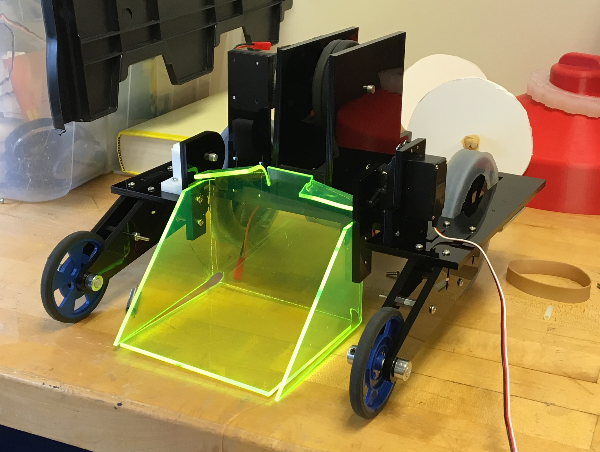
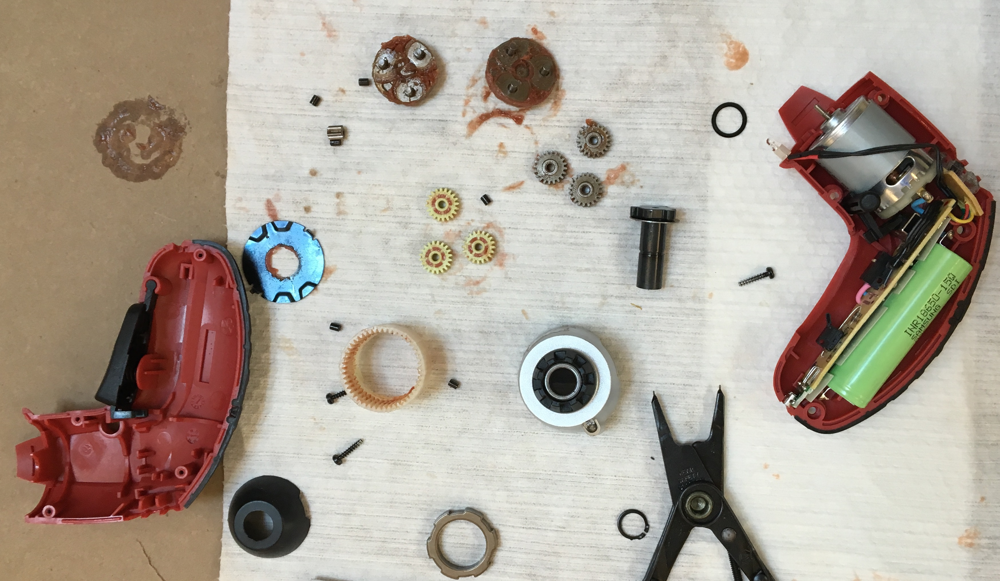
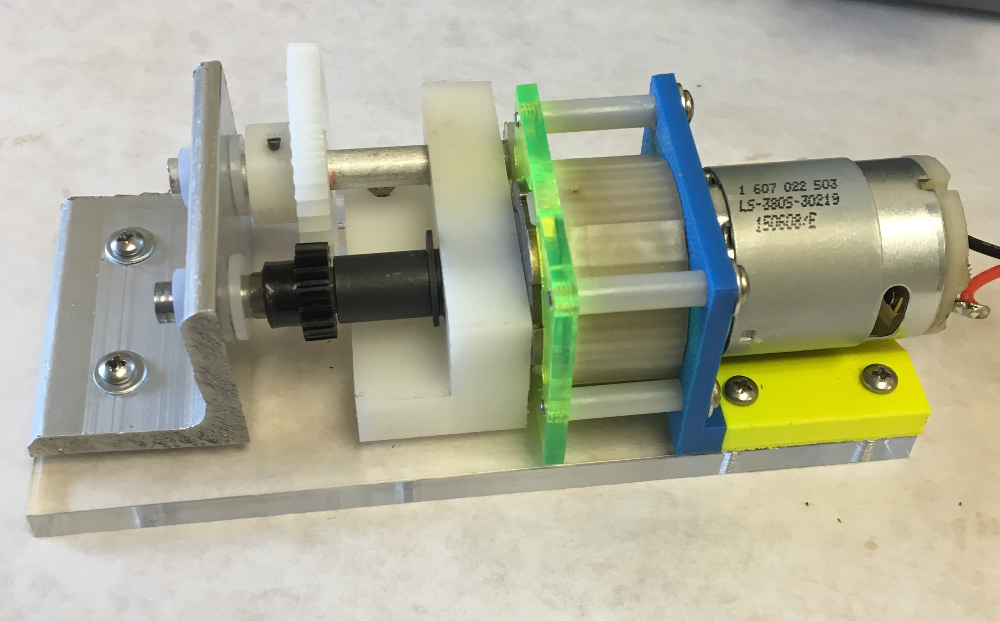
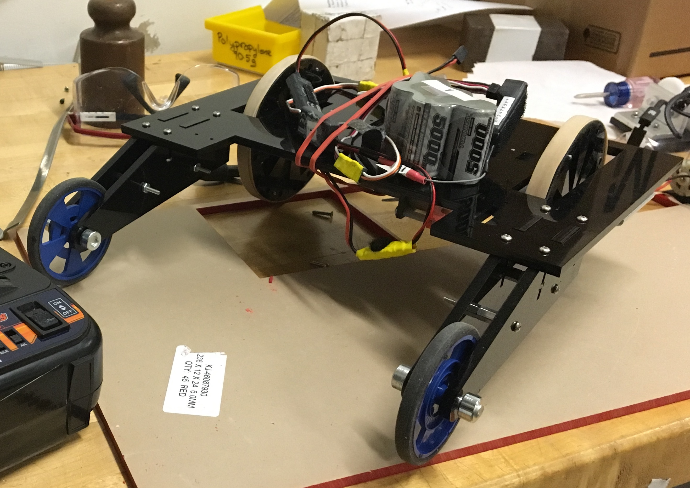
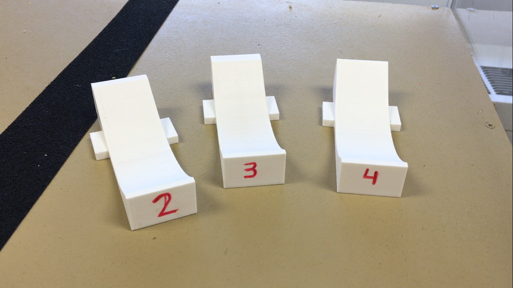

If you don't feel like reading the whole post, just watch this video.
Engineering Sciences 51: Introduction to Computer-Aided Machine Design is the first mechanical engineering course I took in college. It is a broad overview of engineering drafting, design, and manufacturing techniques. The final project for the course is a competition in which we use some of the parts that we made over the semester to make robots specialized to complete one task.
In spring of 2017, when I took the course, the competition involved picking up ping-pong balls on a lower surface and placing them inside holes high on a wall. Teams had to work inside constraints of size, materials, and number of motors. Our team settled on a pitching-machine-inspired design in which a single flywheel launched balls into the hole. We were the only team to make a shooter-type robot; every other team had some variation on a hopper at the end of an arm that dumped the balls into the holes.
The finished robot
A shooter design has a couple of notable advantages over dumper designs. Because we had no arm-hopper assembly, our robot was the lightest in the competition. Likewise, our robot had a very low center of mass because it could be shorter than a dumper design robot, which made it possible for us to climb the steeper ramps and flip other robots. The biggest advantage of the shooter design, though, is that we never needed to climb the ramps because our design could shoot from the lower level of the stage.
Part of the course involved creating a gearbox by disassembling a cordless screwdriver and mounting the parts in parts that we made ourselves.
The disassembled screwdriver and its planetary gearbox
The finished gearbox
The gearbox gives a visual overview of the techniques we learned in the class. On the far right, there is the screwdriver motor on a 3D-printed mount that I drafted for our first homework assignment. It drives a planetary gearbox that's sandwiched between the motor mount and a laser-cut acrylic faceplate. The planetary gearbox drives a hex-to-round steel rod that I turned during my first time using a lathe. It's supported by a piece of CNC-milled Delrin and a hand-machined length of aluminum angle stock. The steel rod turns a small black gear which drives a larger white gear that is spring-pinned into a length of alumnium rod. The entire assembly is mounted to a laser-cut acrylic base.
Since everybody taking the course made a gearbox, our team had three gearboxes to work with. We used two to drive the rear wheels of the robot, mounting them on the underside of the chassis. The entire base plate of the robot was built from a single piece of laser-cut acrylic in order to minimize weight. The vast majority of the structural components on the robot were made from laser-cut acrylic because it was very easy to make high-tolerance parts with complex geometries.
The chassis and drivetrain fully assembled. The gearboxes are hidden underneath the base plate.
We used the last gearbox to drive the flywheel. The gearbox had a gear ratio of 243, and it drove the wheels at around 20 RPM. The two visible gears provided a three times speed reduction, and the planetary gearbox had two stages that each reduced speed nine times. For a flywheel to shoot a ping-pong ball the five feet or so that we needed, it had to be spinning much faster than 20 RPM. The motor itself was clocked at over 4000 RPM, but it provided very little torque, so it would jam if we drove the flywheel directly from the motor. The solution that I devised was to remove a stage of the planetary gearbox by sawing the ring gear in half. With the flywheel attached directly after this single planetary gearbox stage, we could rev the flywheel up to 600 RPM or so.
The shooting action in slow motion
The green hopper in the above photo was made from a sheet of acrylic bent into shape after being heated. It allowed us to both scoop balls and load them into the shooting mechanism with a single servo motor. The balls rolled between the flywheel and a 3D-printed ramp. We went through a number of iterations before decided on a curve that worked best.
Earlier ramp designs
Scooping
Scoring
We won second place in the competition. Our biggest shortcoming was that it was very easy for other teams to stop us from scoring by bumping into us while we were shooting. You can watch the robot in action here.